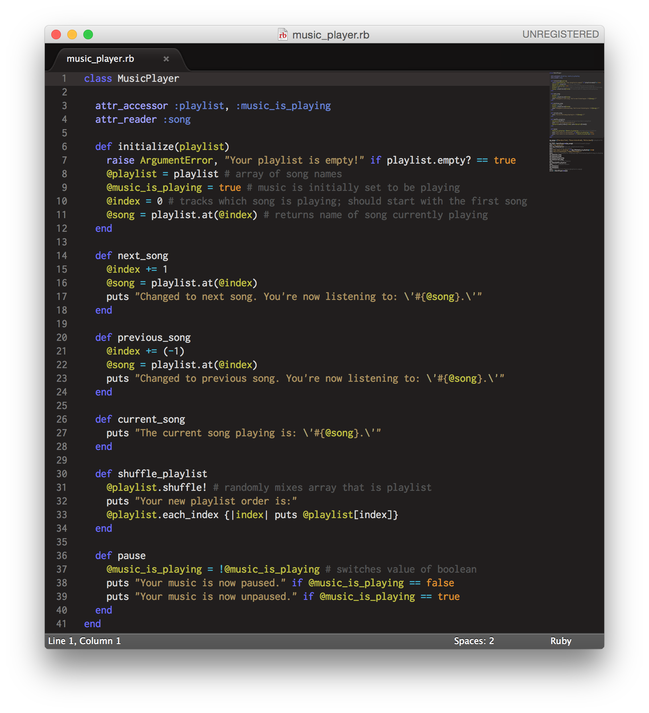
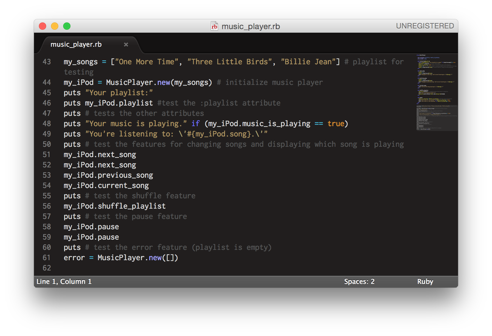
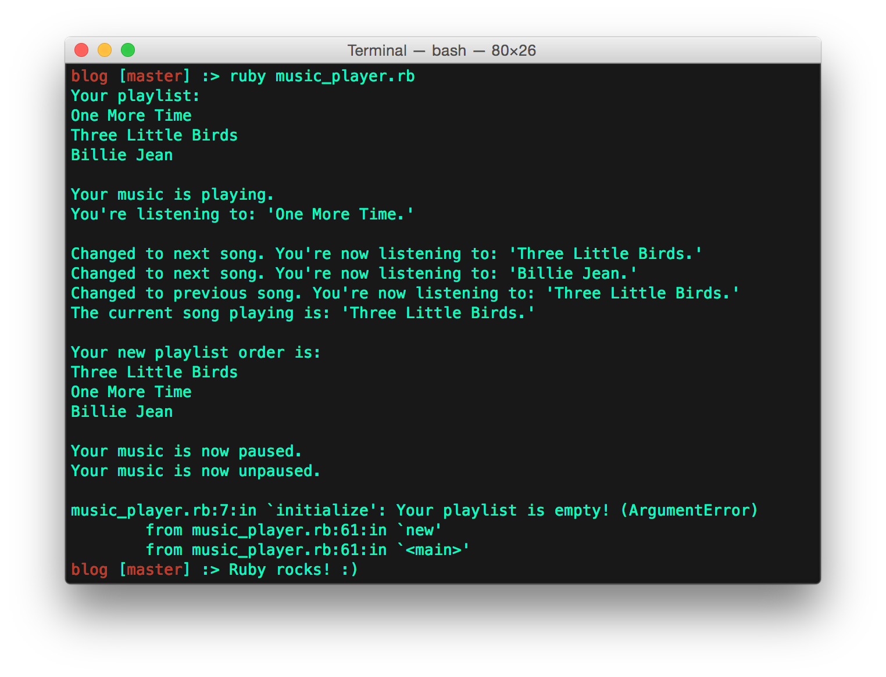

Anthony Hernandez
Software Engineer


If there's one thing that everyone loves, it's music. Could you imagine a world without it? What about a world without a means to play your favorite music? Imagine if we were all still using vinyl or cassette players, and not by choice! You wouldn't be able to quickly change songs, create a playlist, check which song is playing, or randomize the order by which your music is playing! Luckily, thanks to computers and software, this is now possible. In Ruby, there's something called a Class, which enables us to make our own music player. Sure, it's much more complex than the example I'm going to show you, but some of the features of a music player can be simulated rather easily using Ruby classes.
By creating a class in Ruby, you can quickly create objects (such as playlists) that are unique from one another, but have the same features and characteristics. For example, say you want a playlist for partying and a playlist for relaxing, two entirely different moods. Obviously, the playlists are going to have different songs, but they should have the same features and characteristics available to them (it's not like you're never going to want to shuffle the playlist, change the song, or announce the song name for either playlist). By creating a class that has it's own unique methods (referred to as "instance_methods") and variables (referred to as "instance_variables"), any object that is created as an instance of this class will have such methods and variables available to them. Any variables created for such class (such as "song_name") will be accessible by any methods of such class, or by the object itself (say you want to know the name of the song currently playing, which exists within your playlist). Just the same, the methods of such class can utilize other methods (and variables) that exist within such class (say you have a method in the class that announces the current song playing, and you create another method that changes the song and then announes the song playing - you can have your method change the song, then call the method that announces the song playing).
When: You need to create an object-type that you will likely make multiple instances of. Examples: To-do lists, phone contacts, or a game (tic-tac-toe).
Why: It needs to have it's own methods and variables that each instance of the object requires.
How: Check out my example below, which shows how you can use Ruby classes to create a simple music player (albeit, it doesn't actually play music, it just shows you the name of the song that is "playing"), which takes a playlist as it's argument. In my example, each playlist is an instance of the class.

Below is a picture of the tests I created for my class. A picture of their ouput follows, but you can try testing the code for yourself if you do not believe me.

